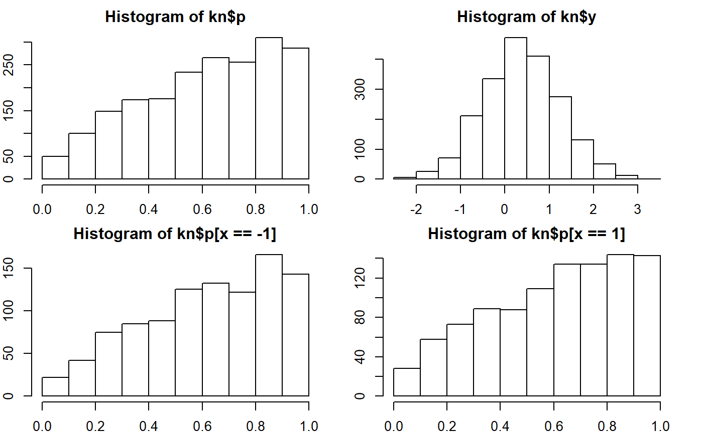

setknowledge.RdSet knowledge levels of agents (Now only applicable with two groups).
setknowledge(group, mean1 = 0.6, mean2 = 0.7, spread = 0.8, kn_seed = NULL)
| group | The vector of group membership of agents. |
|---|---|
| mean1 | The lowest average level of knowledge for a group. |
| mean2 | The highest average level of knowledge for a group. |
| spread | The spread (SD for normal distribution) of knowledg within a group. |
| kn_seed | Random seed value to draw knowledge |
The updated list of ideology parameters
knp Knowledge level converted to 0-1 range by inverse-standard-normal function.
kn The raw knowledge score
kn_seed random seed value used.
If two groups, the raw knowledge score is generated by the normal distribution with
mean mean1 and standard deviation spread for the first group;
the normal distribution with mean mean1 and standard deviation spread
for the second group. If more than two groups, additional group means are assigned by the
points that equally divides the interval between mean1 and mean2.
# initiate groups set.seed(30) x <- sample(rep(c(-1,1),each=1000)) # Set Knowledge # sd of 0.85 produce approx. 0.25 SD after conversion. kn <- setknowledge(x, 0.65, 0.65, 0.85) par(mfrow=c(2,2),mar=c(2,2,2,2)) hist(kn$p); mean(kn$p); sd(kn$p)#> [1] 0.6127307#> [1] 0.2554228hist(kn$y); mean(kn$y); sd(kn$y)#> [1] 0.3796447#> [1] 0.8589773hist(kn$p[x==-1]); mean(kn$p[x==-1]); sd(kn$p[x==-1])#> [1] 0.6195299#> [1] 0.2515119hist(kn$p[x==1]); mean(kn$p[x==1]); sd(kn$p[x==1])#> [1] 0.6059315#> [1] 0.2592222# sd of 0.8 produce approx. 0.25 SD after conversion. kn <- setknowledge(x, 0.60, 0.70, 0.85) par(mfrow=c(2,2),mar=c(2,2,2,2)) hist(kn$p); mean(kn$p); sd(kn$p)#> [1] 0.6118137#> [1] 0.2560068hist(kn$y); mean(kn$y); sd(kn$y)#> [1] 0.3796743#> [1] 0.862337hist(kn$p[x==-1]); mean(kn$p[x==-1]); sd(kn$p[x==-1])#> [1] 0.5689822#> [1] 0.2601458hist(kn$p[x==1]); mean(kn$p[x==1]); sd(kn$p[x==1])#> [1] 0.6546451#> [1] 0.2445321